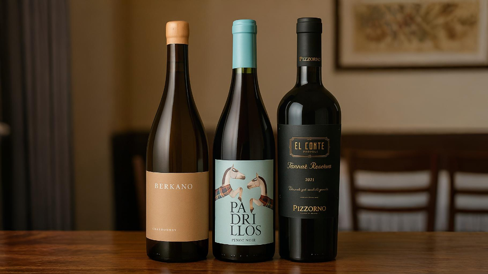

Cardápio
No Le Cordon Bah, tradição gaúcha e alta gastronomia se encontram em menus que celebram sabores e
momentos especiais.
Escolha sua experiência e delicie-se com nossas opções cuidadosamente preparadas.
Sabor do Pampa
Entrada
Mini polenta cremosa com queijo colonial e
cogumelos grelhados
Prato principal
Entrecot Angus grelhado ao molho de vinho
da campanha, purê de batata
baroa trufado e farofa de castanhas

Sobremesa
Pavê de doce de leite com flor de sal e telha
crocante de erva-mate
Cordeiro & Cabernet
Entrada
Salada morna de folhas amargas com brie derretido e geleia de pimenta
artesanal
Prato principal
Filé de cordeiro ao molho de vinho tinto e hortelã, acompanhado de
risoto de alho-poró
Sobremesa
Crème brûlée de bergamota com crosta dourada
Menu Gaúcho de Gravata
Entrada
Tartare de carne de sol com crocante de aipim e
espuma de chimichurri
Prato principal
Peito de frango recheado com queijo
serrano e espinafre, servido com
mil-folhas de batata e molho de mostarda e mel
Sobremesa
Mousse de chocolate 70% com farofa de pinhão
caramelizado e redução de
vinho doce
Vinhos para harmonização com os cardápios
Chardonnay Barricado
Branco cremoso com toques de baunilha e frutas tropicais. Combina bem com frango, queijos e pratos cremosos.
Pinot Noir
Leve e frutado, com toques de especiarias. Ótima escolha para pratos delicados ou entradas sofisticadas.
Tannat Reserva
Encorpado, com notas de frutas negras e taninos firmes. Ideal para pratos intensos, como carnes vermelhas.